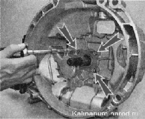
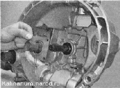
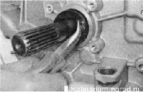
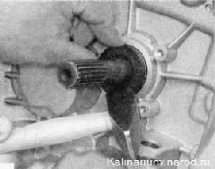

Сальник первичного вала заменаПри износе сальника первичного вала масло из коробки передач попадает в картер сцепления. При этом могут замасливаться диски сцепления. Неисправность можно определить по наличию подтеков из-под нижней части крышки картера сцепления. Снятие 1. Подготавливаем автомобиль к выполнению работы. 2. Снимаем коробку передач. 3. Снимаем с картера детали привода сцепления. 4. Торцовым ключом на 10 мм отворачиваем три болта крепления направляющей втулки подшипника выключения сцепления. 5. Снимаем втулку с первичного вала коробки передач. 
6. Аккуратно, чтобы не поцарапать первичный вал коробки, небольшим зубилом или кернером пробиваем сальник. 7. Плоскогубцами (с загнутыми губками) извлекаем сальник из посадочного гнезда. Установка Смазываем рабочую кромку нового сальника трансмиссионным маслом и запрессовываем его, используя старый сальник как оправку. Далее устанавливаем детали в обратной последовательности. |